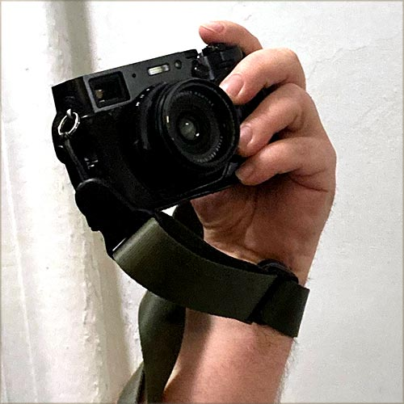

Photography is not just a hobby; it's a profound form of expression that allows individuals to capture moments in time, evoke emotions, and convey stories without uttering a single word. Dating back to the early 19th century, the invention of the camera revolutionized visual communication. From the first rudimentary images captured on light-sensitive materials to the modern digital era, photography has evolved into an accessible and versatile art form.
One of the compelling reasons why photography makes an excellent hobby is its ability to cultivate mindfulness. When behind the lens, photographers immerse themselves in the present moment, focusing their attention on framing the perfect shot, adjusting settings, and observing their surroundings with heightened awareness. This mindfulness practice not only enhances one's ability to capture captivating images but also fosters a deeper connection with the world around them.
Moreover, photography serves as a creative outlet for self-expression and exploration. Through composition, lighting, and subject choice, photographers can convey their unique perspectives, beliefs, and emotions. Whether capturing the raw beauty of nature, the hustle and bustle of urban life, or the intimate moments shared between loved ones, photography enables individuals to communicate their narratives and leave a lasting impact on viewers.
Additionally, the process of learning photography is a lifelong journey filled with continuous growth and discovery. From mastering technical skills to experimenting with different genres and styles, there's always something new to explore. This constant evolution not only keeps the hobby engaging and rewarding but also offers opportunities for personal development, problem-solving, and self-improvement. Whether pursuing photography casually or professionally, the journey itself is enriching and fulfilling, making it a truly worthwhile hobby for individuals of all ages and backgrounds.